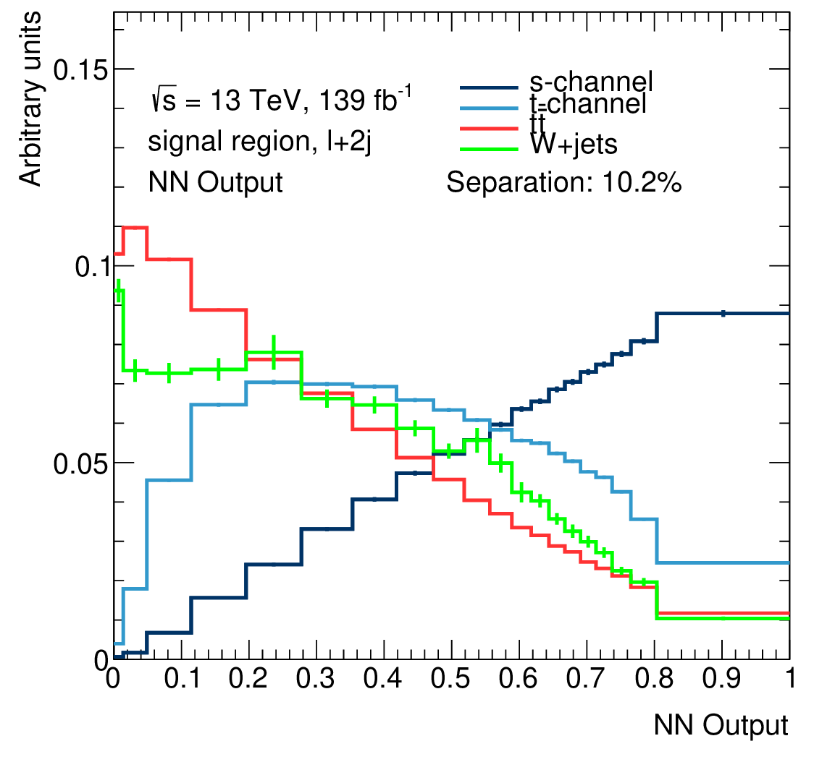
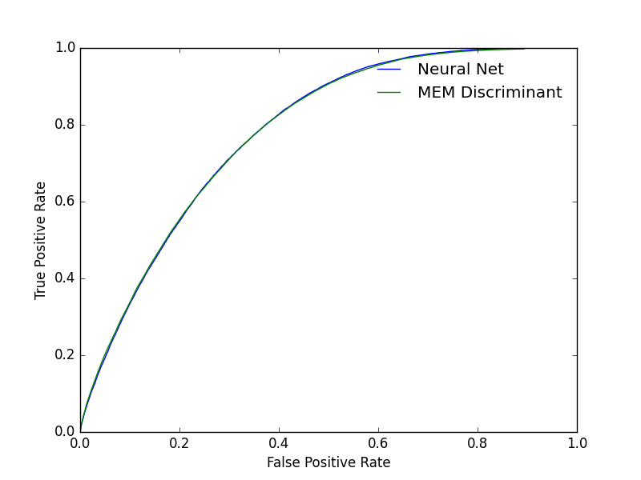

Neural Net study
Attempt to improve the significance of my PhD Thesis
The analysis
The idea: The matrix element method produces an intermediate results. Can a machine learning algorithm extract more information by combining these with some kinematic variables?
ListOfSamples = os.listdir(self.path)
for Sample in ListOfSamples: # ~36 is schanl
if not Sample.startswith("ntup"): continue
if Sample.__contains__("data") and not self.DoData :
continue
if self.DebugLevel > 0 : print (Sample)
with uproot.open(self.path+Sample) as File:
if not 'physics;1' in File.keys():
print("Bad Sample: " + Sample)
continue
Physics = File["physics"] #Data is in this Tree
Electrons and muons must be combined in a lepton feature and Jets split into a leading and sub-leading jet.
import awkward as ak
for Feature in self.ListOfFeature:
Data = Physics[Feature].array()
length = len(Data)
if length == 0:
print("WARNING this sample has no entries")
break
if Feature.__contains__("jet") :
Numpy = ak.to_numpy(Data)
JetLead = Numpy.T[0]
SubLead = Numpy.T[1]
Dict.update({"Lead_"+Feature:JetLead, "SubLead_"+Feature: SubLead})
elif Feature.__contains__("el_") or Feature.__contains__("mu_"):
# When a muon is in the event the electron p_T array is [] and vice versa
Numpy = np.array(ak.to_list(Data), dtype="O")
good = [ False if np.size(x) == 0 else True for x in Numpy]
Masked = ak.mask(Data,good) #with this masked array we only take the value if we have the correct particle
MaskedNumpy = ak.to_numpy(Masked)
if np.size(MaskedNumpy) == 0:
MaskedNumpy = np.zeros(( len(Masked),1 ))*np.nan
Dict.update({Feature:MaskedNumpy[:,0]}) #leptons merged later
else:
Dict.update({Feature : Data})
The data is stored in a pandas Dataframe. Before feeding the data into the neural net, the features are scaled to mean 0 and sigma 1 and the log of the likelihood (the result from the MEM) is computed because this feature ranges from 10-10 to 1.
Preproc = Preprocesser(Df, SystName, DirectoryName, CampaignName)
Df = Preproc.AddLeptons()
Df = Preproc.MakeSignalBool()
Df = Preproc.ScaleToXSection(Campaign, DoData)
Df = Preproc.DropNaNAndInf()
Df = Preproc.LogLikelihood()
Df = Preproc.DropNaNAndInf() # this drops all with llh = 0
A neural net with gradient descent was trained with the odd eventNumber (unique identifier for each event) and tested on the even eventNumbers and vice versa. Surprisingly, the ROC curves of the MEM and the neural net completely overlap which means that the neural net is not able to perform better than the MEM.
 